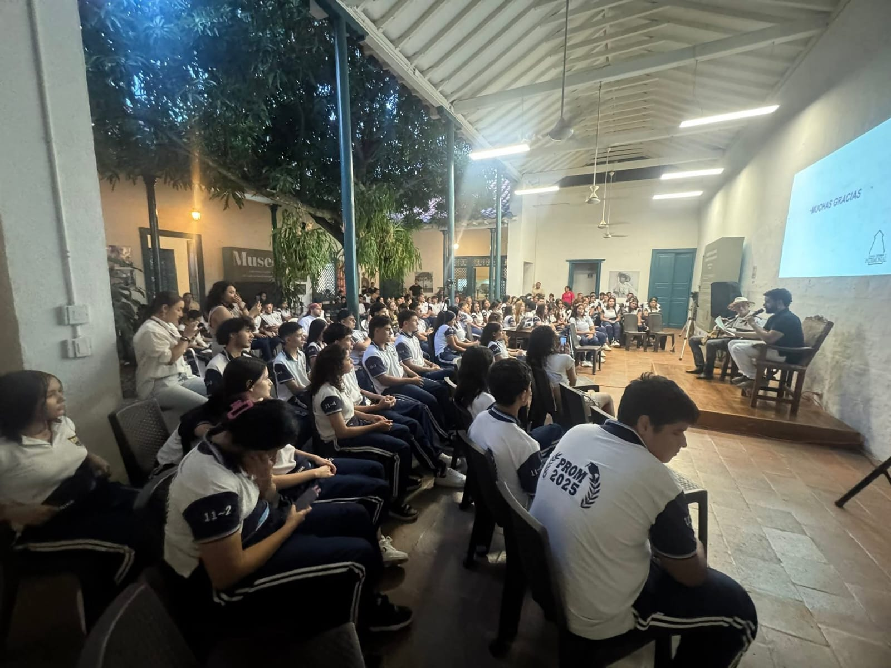

Llevamos a cabo nuestra primera charla de éxito, muy significativo este espacio, lleno de aprendizajes y herramientas para enfrentar el futuro. Gracias a todos los que nos apoyan a construir mejores procesos educativos, la sociedad requiere formentar la educación desde todas las aristas. Gratitud al egresado empresario Emilio Garcia, que calidad de persona, que gran experiencia vivimos esta tarde
15 de septiembre de 2025